人物简介
王瑞
作者自 2018
其打造的 LYSHARK
职业履历
奇安信网神信息技术（北京）股份有限公司
2025年06月 - 2026年03月工控安全实验室
东华软件股份公司
2024年10月 - 2025年05月金融软件部
研究方向
主要研究方向包括高级渗透测试、Web安全、漏洞挖掘与修复、APT攻击防范、无线安全、二进制逆向分析、数字化司法取证、反病毒技术、物联网设备安全、社工测试与防范、反网络欺骗、威胁情报分析、网络攻防演习、红队评测、区块链安全、云安全、数据隐私保护、安全合规与标准、深度学习与安全以及人工智能安全等领域。
所获荣誉
微软最有价值专家奖（Microsoft MVP）
2024年05月 - 2026年07月
获评微软最有价值专家奖（奖项类别：Developer Technologies、授予领域：C++）
中国知网评审专家库入库专家
2024年09月 - 2026年09月
受聘参与学位论文评阅、优秀论文评选、科研成果评议及学术人事资料评审工作（授予领域：学术评审）
华为云开发者专家（Huawei Cloud Developer Experts）
2024年10月 - 2026年06月
旨在认证熟悉华为云开放能力并对开发者生态有突出贡献的技术专家（授予领域：人工智能、信息安全）
金山办公最有价值专家（Kingsoft Valuable Professionals）
2025年01月 - 2027年05月
金山设立的专家荣誉，授予精通金山办公产品技术并参与知识分享的社区领袖（授予领域：技术开发专家）
中国知网星云人才库入库专家
2025年05月 - 2027年05月
同方知网云星评审专家库智能化服务平台，汇聚全学科具备专业资质的专家学者（授予领域：知网人才）
科创中国北京人才库专家
2025年05月 - 至今
中国科学技术协会打造的创新、创业、创造服务品牌，通过产学融合机制实现人才聚合促进科技与经济深度融合
社会活动
活动图集
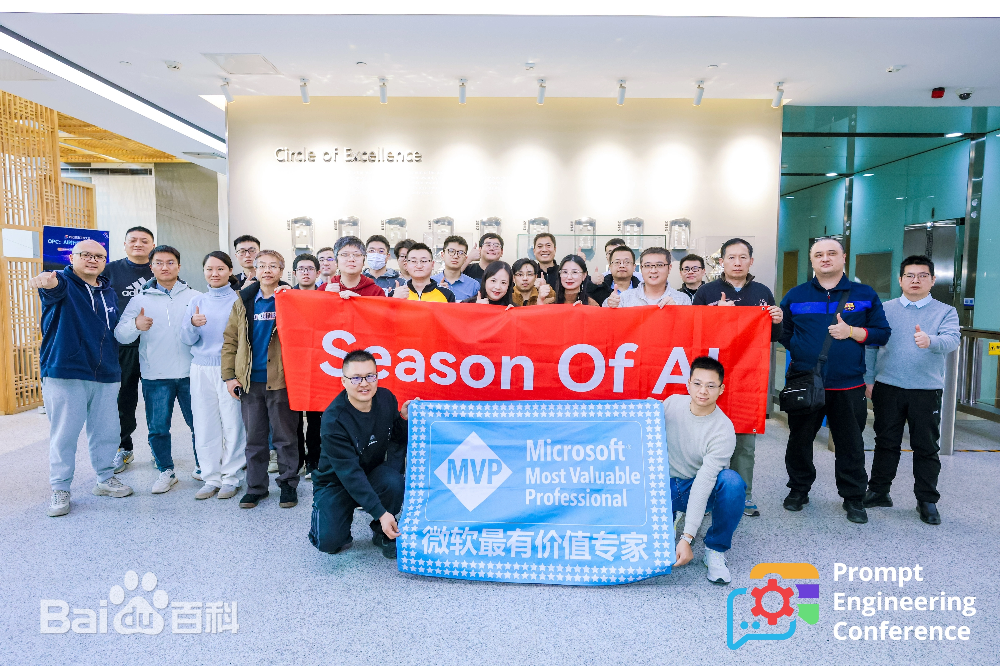
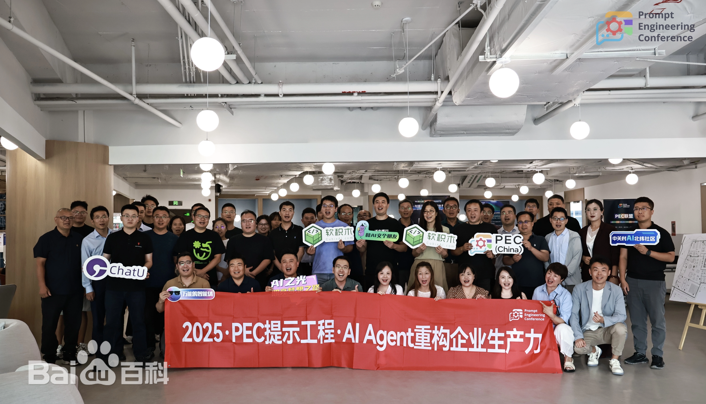
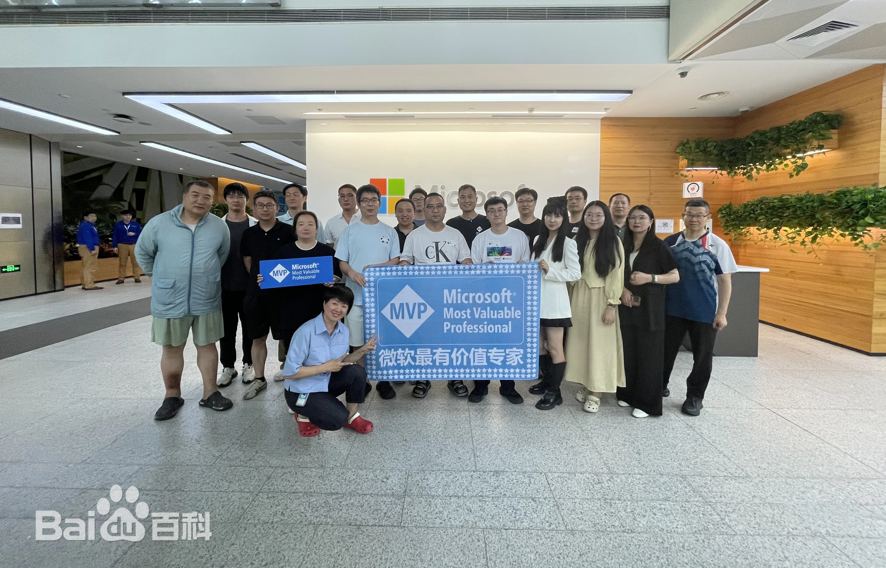
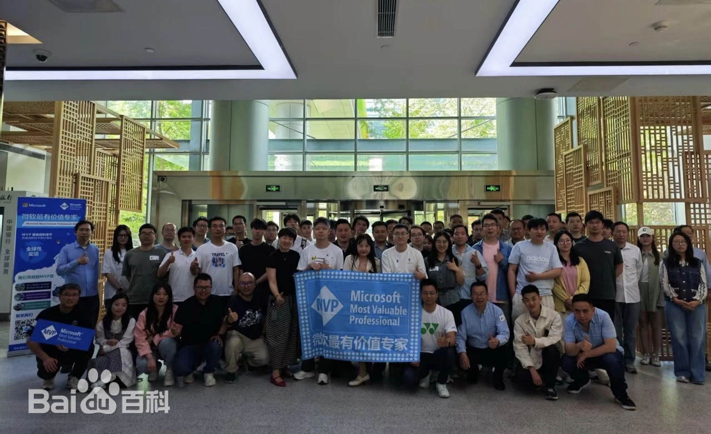
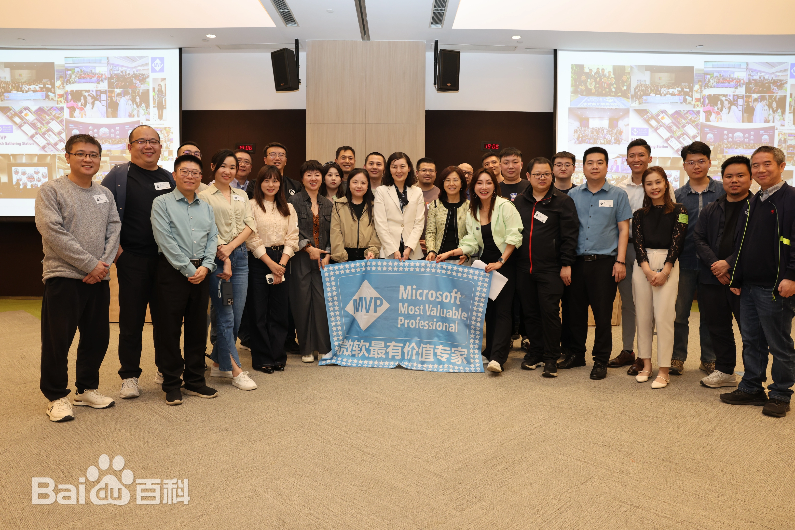
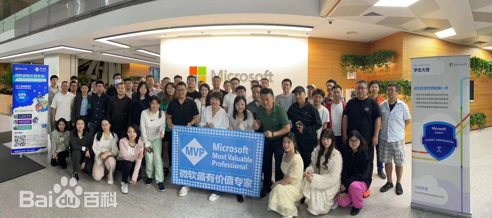
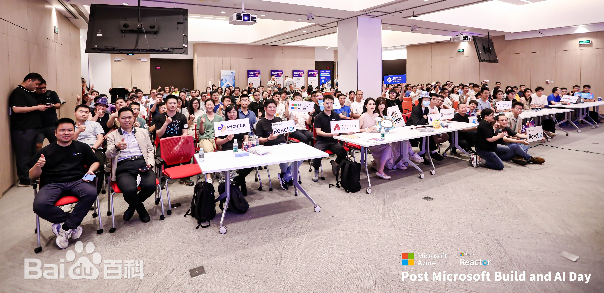
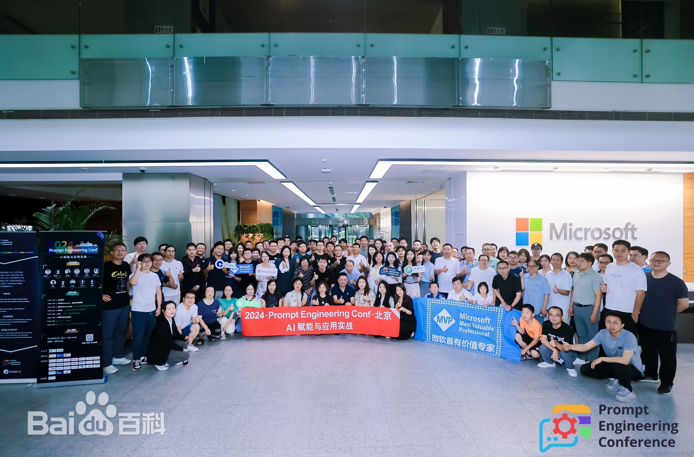
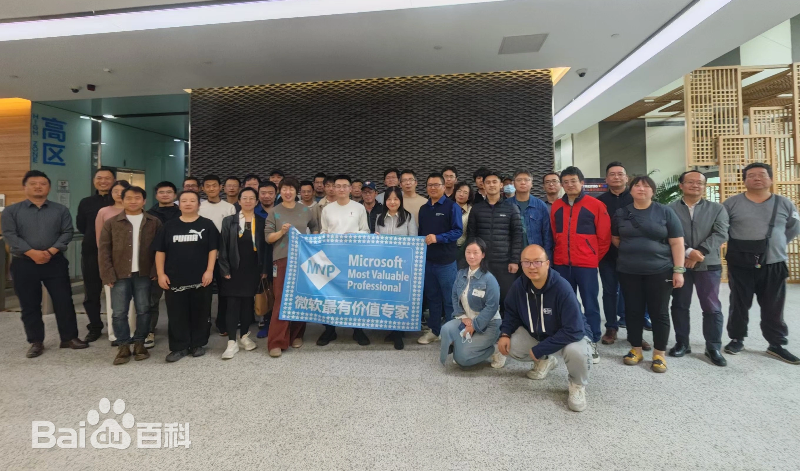
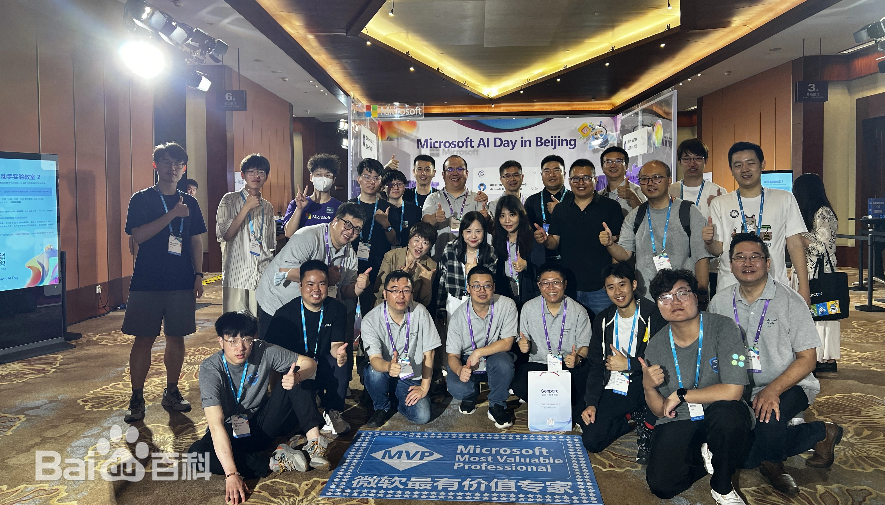
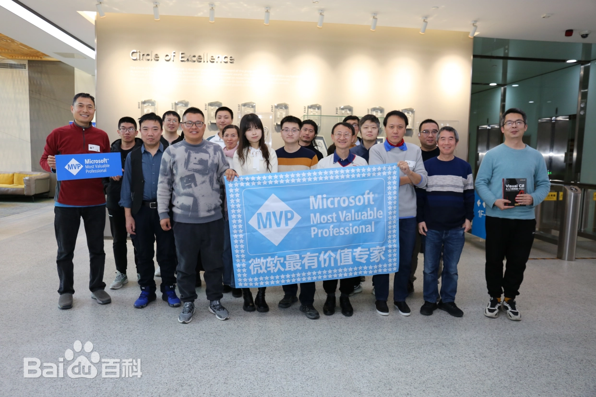
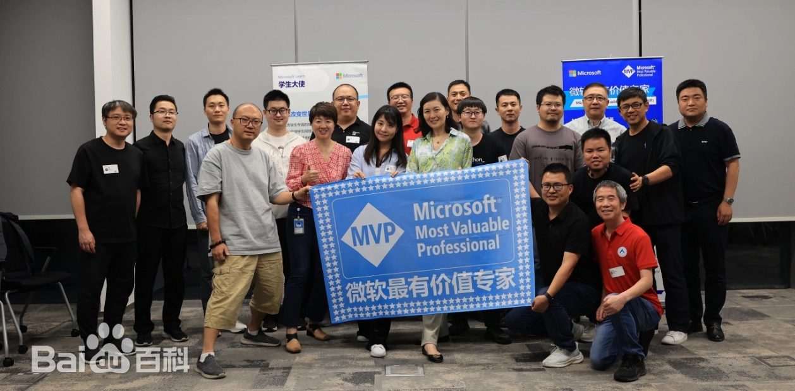
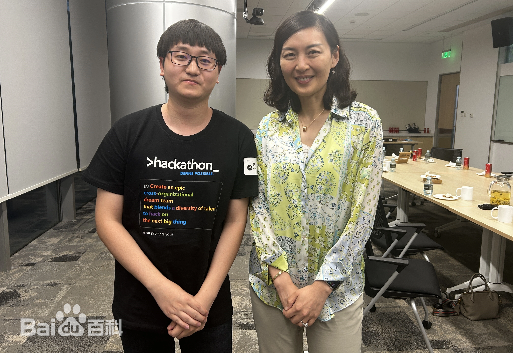
活动详情
Microsoft Season of AI - MCP
2025年12月27日
受邀参加微软技术直通车（第二十八期）之 Season of AI - MCP（Beijing）演讲活动，其主题演讲为AI技术赋能软件安全：智能二进制攻防的创新实践，议题聚焦AI大模型在逆向分析领域的深度赋能，拆解智能工具的核心技术实现逻辑，系统解析MCP协议架构及自定义MCP Server开发全流程，通过实战案例结合反病毒等典型场景，具象化呈现大模型驱动安全工具提高分析效率的路径，阐释AI技术重塑二进制攻防体系的技术脉络与产业价值。
Post Microsoft Ignite in Beijing
2024年11月30日
受邀参加 Post Microsoft Ignite in Beijing 峰会，同微软技术专家以及微软最有价值专家（MVP）齐聚微软中国总部。此次峰会聚焦 AI 领域，不仅发布了诸多亮眼成果，包括 Copilot 全新专用智能体、凭借 Azure AI Foundry 与智能数据带动 Azure 创新、依托云基础设施助力 AI 转型以及针对安全领域生成式 AI 与数字化挑战的创新成果分享，并围绕 AI、开发者与安全解决方案等议题展开了深入探讨。
Microsoft Season of AI for Copilot
2024年11月2日
受邀以讲师身份参加了在微软中国总部举行的微软技术直通车（第二十一期）之 Season of AI for Copilot（Beijing）活动。在活动中，他分享了对人工智能及微软 AI 系列工具的见解，涵盖 Copilot 的概念与发展、GitHub Copilot 的应用与局限、微软 Copilot 与 ChatGPT 的区别，以及 Microsoft 365 Copilot 和 Windows Copilot 的功能及应用场景等内容。此次活动聚焦人工智能与生产力的结合，充分展示了微软 Copilot 系列在多个领域的功能和应用前景，吸引了众多业内人士参与，为推动人工智能技术的发展和应用提供了重要平台。
Prompt Engineering Conf
2024年8月31日
以特邀嘉宾的身份参加了在北京微软大厦举办的 Prompt Engineering Conf—AI 赋能与应用实战主题峰会。此次峰会吸引了众多业内的专家学者、科技精英以及 AI 爱好者。峰会通过线上线下平台，汇聚了超过 7 万名观众，共同见证了 AI 技术与应用融合的前沿成果。
Post Microsoft Build and AI Day
2024年6月15日
参加 Microsoft Build 开发者大会北京站的延展活动—Post Microsoft Build and AI Day，此活动致力于向全球开发者展示微软的最新技术、产品和服务，同时深入研讨数据分析、AI 应用、边缘计算等热门话题，聚焦相关技术领域的最新发布及行业落地实践，并与微软最有价值专家（MVP）项目大中华区负责人梁迪（Christina Liang）合照留念。
Microsoft AI Day in Beijing
2024年6月14日
参加 Microsoft AI Day in Beijing 峰会，于活动期间与微软的高管、技术专家、合作伙伴、Microsoft Learn 团队以及 Microsoft MVP（微软最有价值专家）和 Microsoft RD（微软社区区域总监）等齐聚一堂，深入探讨 AI 智能技术的前瞻性见解以及丰富多样的行业应用场景。
与微软全球资深副总裁会面
2024年5月31日
与微软公司全球资深副总裁、微软开发部门总裁 Julia Liuson 在微软亚洲研究院会面，主要探讨了关于Visual Studio、.NET、Visual Studio Code、TypeScript、Azure、GitHub 以及 Copilot 等编程工具和编程语言，并提出改进意见、想法及建议，交流行业经验并合照留念。
获评微软最有价值专家奖
2024年5月1日
收到了来自美国微软公司的贺信，祝贺他成为本年度微软最有价值专家（Most Valuable Professional，MVP）大奖的获得者。MVP 奖是微软公司颁发给第三方技术专业人士的全球性荣誉奖项，代表着对全球范围内 IT 和互联网技术应用专家的最高荣誉。每年，该奖项从全球数千万技术专家中通过层层筛选产生。截至2023年，此项目已持续运作30年之久，在全球90多个国家拥有将近4000多位最有价值专家。
软件作品
动态漏洞挖掘工具
V1.1.0适配x64dbg调试器的Python自动化框架，可联动调试器完成内存断点挖洞、指令追踪、寄存器调试等操作，支持编写POC、模糊测试、ROP构造，可对接AI工具，实现逆向调试、漏洞挖掘全流程自动化，提升二进制动态分析效率。
静态漏洞挖掘工具
V1.0.7适配IDA Pro的Python静态分析工具，可对接IDA逆向引擎，完成反编译、函数解析、批量自动化分析，用于恶意代码溯源、静态漏洞挖掘，适配各类复杂逆向分析工作。
Windows PE文件分析软件
V3.1.12C/C++开发、AI赋能轻量化PE解析工具，支持32/64位EXE、DLL文件无风险静态解析，可查看文件底层结构，联动大模型生成分析报告，自带多款辅助工具，支持文件修改、POC构造，分多版本适配个人、企业使用，适配Windows全系统。
Windows 动态反汇编调试软件
V2.0.0 / V2.1.0C/C++自研无依赖命令行调试器，支持x86/x64架构，依托系统调试接口与反汇编引擎，可轻量化完成程序调试、恶意代码分析、漏洞挖掘，配置简单、运行稳定。
内核级内存读写驱动软件
V2.0.0Windows内核驱动工具，支持跨进程内存读写、内核管控、虚拟化监控，自带内存绕过、钩子拦截等攻防功能，搭配Python接口可自动化分析内存，多用于漏洞开发、Rootkit检测、反作弊对抗，需签名/调试模式部署。
反汇编代码注入软件
V2.0.0C/C++开发应用层注入工具，可向进程注入DLL、ShellCode，支持进程汇编调用、脚本可用性检测，多用于渗透测试场景。
命令行版远程控制软件
V1.3.0C/S架构加密远程管控工具，支持自定义网络协议、远程执行命令、文件传输、设备监控，支持进程注入、权限维持，加密传输数据，适用于攻防演练、后渗透运维。
内网穿透流量转发软件
V1.0.0TCP流量转发工具，可搭建内网穿透隧道，实现端口映射、流量中转、多级跳板，突破网络隔离，辅助内网横向渗透、漏洞利用。
外部 D3D 动态绘制库软件
V1.0.0C++开发跨进程绘图库，依托Windows图形接口，可在第三方程序界面叠加绘制图形、文字，GPU高清绘制，多用于程序自动化标注、游戏辅助、视觉识别场景。
发表作品集
《C/C++ 反汇编系列实战》
8 篇
《Flask Web 框架技术实践》
20 篇
《Linux 系统运维技术实践》
67 篇
《MySQL 数据库从入门到精通》
22 篇
《Python 编程技术实践》
35 篇
《Python 代码片段总结》
27 篇
《Python 入门系列教程》
25 篇
《Qt Creator 编程技术实践》
48 篇
《Qt 窗体开发从入门到精通》
34 篇
《Visual C# 开发技术实战应用》
12 篇
《Visual C++ 编程技术实践》
85 篇
《Visual C++ 代码片段笔记》
29 篇
《Visual C++ 入门系列教程》
47 篇
《Windows PE结构系列教程》
15 篇
《Windows 汇编语言入门教程》
26 篇
《Windows 内核安全编程技术实践》
93 篇
《x64dbg 自动化从入门到精通》
34 篇
《灰帽黑客：攻守道》
273 篇
《渗透测试与网络安全实战》
49 篇
《网络设备实战配置笔记》
9 篇
参考资料
王瑞 | 最有价值专家．微软官网 [引用日期2024-05-03]
奇安信科技集团在职证明扫描件．公开由词条本人提供 [引用日期2025-08-23]
北京启明曙光科技有限公司．百度爱企查 [引用日期2026-02-28]
信息安全电子刊物出版品牌．LYSHARK [引用日期2024-12-06]
Microsoft Most Valuable Professional (MVP)．Credly [引用日期2024-05-03]
王瑞_华为云HCDE成员．华为云官网 [引用日期2024-05-03]
金山办公最有价值专家证书．公开由词条本人提供 [引用日期2026-06-22]
王瑞-个人主页_科创中国．科创中国官网 [引用日期2026-06-22]
中国知网论文评审专家聘书．公开由词条本人提供 [引用日期2026-06-23]
中国知网星云人才库证书．公开由词条本人提供 [引用日期2026-06-23]
Red Hat Certified System Administrator．红帽官网 [引用日期2026-06-23]
Red Hat Certified Engineer．红帽官网 [引用日期2026-06-23]
Oracle APEX Cloud Certified Developer Professional．甲骨文官网 [引用日期2026-06-23]
Oracle AI Vector Search Certified Professional．甲骨文官网 [引用日期2026-06-23]
Oracle Certified Professional．公开由词条本人提供 [引用日期2026-06-23]
Huawei Certified ICT Professional．公开由词条本人提供 [引用日期2026-06-23]
HarmonyOS Application Developer Certification．公开由词条本人提供 [引用日期2026-06-23]
工信部认证网络安全高级架构师．公开由词条本人提供 [引用日期2026-06-23]
科大讯飞智能体认证工程师．公开由词条本人提供 [引用日期2026-06-23]
百度云生成式AI资深认证工程师．公开由词条本人提供 [引用日期2026-06-23]
微软Copilot人工智能领航者证书． 微软中国市场活动 [引用日期2026-06-23]
Rui Wang | IEEE Collabratec®． 电气电子工程师学会 [引用日期2026-06-23]
Rui Wang｜APA Certificate． 美国心理学会 [引用日期2026-06-23]
LYSHARK． 博客园 [引用日期2026-06-24]
博客列表（按博客积分）． 博客园官网 [引用日期2026-06-24]
王瑞的博客． CSDN [引用日期2026-06-24]
2023年博客之星年度评选获奖用户榜单排名公布． CSDN官网 [引用日期2026-06-24]
2023年度CSDN博客之星奖．公开由词条本人提供 [引用日期2026-06-24]
CSDN博客专家荣誉称号．公开由词条本人提供 [引用日期2026-06-24]
微软最有价值专家奖杯．公开由词条本人提供 [引用日期2026-06-24]
微软最有价值专家获奖者． 微软官网 [引用日期2026-06-24]
遇见微软公司全球副总裁． 微软官网 [引用日期2026-06-24]
微软AI人工智能开发者峰会． 微软官网 [引用日期2026-06-24]
微软构建与人工智能开发者峰会． 微软官网 [引用日期2026-06-24]
Prompt Engineering Conf—AI 赋能与应用实战主题峰会． 微软官网 [引用日期2026-06-24]
Season of AI for Copilot（Beijing）． 微软官网 [引用日期2026-06-24]
探索 AI Agent | Post Microsoft Ignite in Beijing． 微软官网 [引用日期2026-06-24]
微软技术直通车（第二十八期） 之 Season of AI - MCP（Beijing）． 微软官网 [引用日期2026-06-24]
《灰帽黑客：攻守道》． 中国版权保护中心官网 [引用日期2026-06-24]
《Windows 内核安全编程技术实践》． 中国版权保护中心官网 [引用日期2026-06-24]
WindowsKernelBook． GitHub [引用日期2026-06-24]